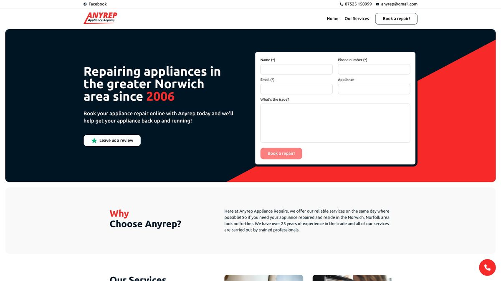

Anyrep is an appliance repairs company based in Norwich, Norfolk. They needed a website to showcase their services and allow customers to contact them.
Deno
Fresh
Typescript
TailwindCSS

Introduction
Anyrep is an appliance repairs company based in Norwich, and it just so happens that's owned and run by my Dad. As such, I can't leave him without a modern, responsive and SEO-optimised website, and so this exists.
This is now the third iteration of this site I've built for Anyrep, and this time around I wanted to focus on the basics. That means no half-baked store functionality, no complex booking form and no crazy design. Just a simple, informative site that explains the services and funnels people towards a booking form that doesn't bombard users with never-ending questions.
Technology
Both previous iterations of the Anyrep website were built using NuxtJS, and despite the developer experience being great. NuxtJS 3 has still to release, and I was feeling adventurous with my stack. As a result, I ended up choosing the Deno-based framework: Fresh.
There is a couple of reason for choosing this framework beyond being adventurous, however. Its combination of SSR, preact and out-of-the-box Typescript support made it a no-brainer for me due to the performance implications and type safety. Another massive benefit to me was the quick and easy hosting with Deno Deploy, which just so happens to also be free for the expected traffic of this site.
There is no point reinventing the wheel, so this time I decided to use Tailwind for the styling. I havent got much to say here, despite the time saving and optimal bundle being amazing.
Conclusion
Overall this build went super well! The tech stack made development a breeze and Deno Deploy made hosting so simple its hard to imagine having went another route for it.
Due to the simple design and powerful stack, adding more complex features in the future should be super easy and hopefully delays the inevitable V4!